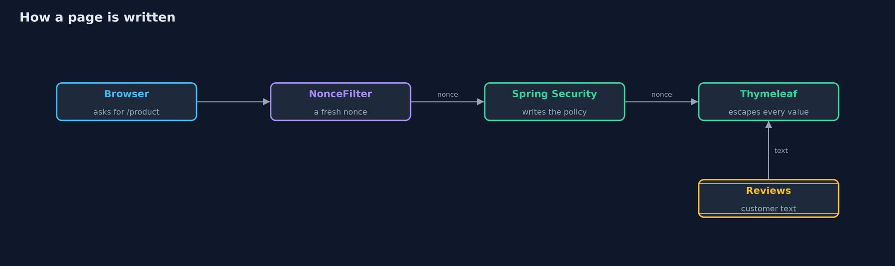
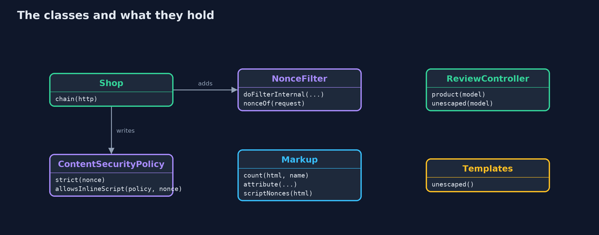
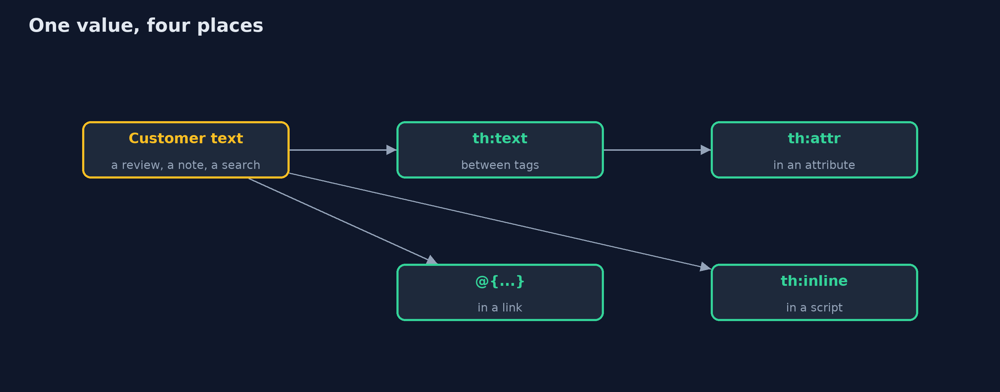
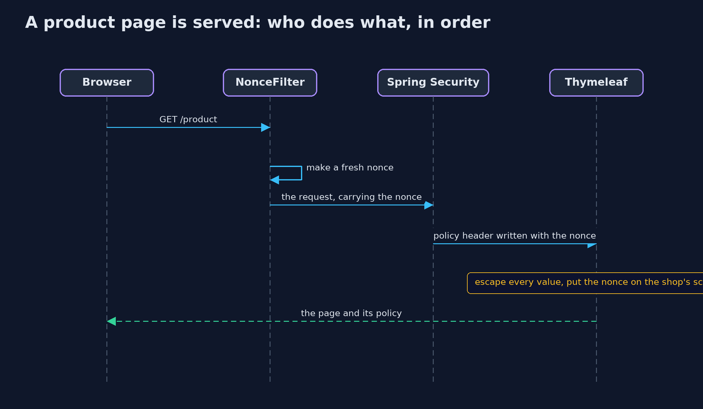

Cross-Site Scripting with Spring Boot: Thymeleaf Escaping and a Nonce CSP
src/main/java/com/jk/explore/security/xssspring/
├── ContentSecurityPolicy.java A strict Content-Security-Policy with a fresh nonce for every response, and an evaluator that answers what a browser would: may this inline script run?
├── Encode.java Reads an HTML-escaped value back as a browser would, so a test can check that a value survived the page whole
├── Markup.java A small model of how a browser would read a page: which elements it contains, and what an attribute's value is
├── NonceFilter.java Gives every request a fresh nonce, before Spring Security writes its headers
├── ReviewController.java The product page, written twice: the way Thymeleaf writes it by default, and with th:utext, the one switch that turns escaping off
├── Shop.java The store: Thymeleaf pages, and Spring Security writing a strict Content-Security-Policy with this request's nonce
├── Templates.java The store's templates, read from the class path, so a test can list every place that turns escaping off
├── Wire.java Fetches a page from a running store over the loopback interface with the JDK's HTTP client
└── XssSpringDemo.java Runs the online store story in five numbered acts against a real Spring Boot server on the loopback interface
Thymeleaf escapes every value written with th:text, in the right way for an attribute, a link or a script; th:utext switches that off, and Spring Security can send a strict policy with a fresh nonce for every page once a small filter supplies the nonce.
The plain version of this lesson wrote an encoder for each place a value can go. Real applications let a template engine do it. Thymeleaf, the engine that Spring Boot
uses for server-rendered pages, escapes every value written with th:text, and it escapes differently for an attribute, a link built with @{...} and a value inside a script
with th:inline="javascript". The danger is the one switch that turns escaping off: th:utext, "unescaped text", which writes a value as markup.
The second line of defence is a strict Content-Security-Policy with a fresh nonce for every page. Spring Security writes security headers, but its policy is a fixed string, so the store adds one small filter that makes a nonce for each request, gives it to the header and to the template, and puts it on the page's own script. It maps to Injection (A05) in the OWASP Top 10 (2025), CWE-79, and the OWASP ASVS chapter on encoding and sanitization.
The idea in everyday terms
Think of a shop that prints customers' reviews on its notice board through a printer that always prints in plain letters. Whatever a customer writes, it comes out as words. The printer has one switch marked "print as the shop's own sign", and anyone who flips it for a customer's note lets that note pass as the shop. The policy is the board's rule that only notices with today's stamp count.
The scenario
An online store shows product reviews with Thymeleaf. The demo writes Ana's review with th:text and with th:utext, writes Ben's fit note, a search link and a value inside a script, checks the page's policy and nonce on two requests, and reads the session cookie's flags.
Run
./gradlew run
The demo tells the story in 5 acts, each printing exact numbers that the tests check:
| Act | What it shows |
|---|---|
| 1. Thymeleaf escapes by default | Ana's review, the text Great boots, written with th:text comes out as <b>Great boots</b>: no bold element on the page, and nothing had to be remembered. |
| 2. th:utext, the one switch that turns escaping off | The same review written with th:utext becomes a bold element the shop never wrote; one of the two templates uses th:utext, and a test fails if another appears. |
| 3. The other places a value can go | Ben's fit note reads back whole from an attribute, the search text stays one link parameter, and a value inside a script is written as one JavaScript string. |
| 4. A strict Content-Security-Policy from Spring Security, with a fresh nonce for every page | Every page has a policy whose nonce matches the page's own script, the next page has a different nonce, and a script without the nonce may not run. |
| 5. The bill | The session cookie is HttpOnly and SameSite=Strict; escaping protects only what goes through it; some places need design rather than escaping; the nonce needs a small filter. |
Test
./gradlew test
13 tests in ContentSecurityPolicyTest, DemoRunsTest, ShopPagesTest, TemplatesTest. The real server is tested for escaping in each place, the trap template, a fresh nonce on every page that matches the page's script, and the cookie flags. A guard test fails if any template other than the trap uses th:utext, or if an inline script lacks the nonce. Nonces and ports change on every run, so the demo prints only facts about them and the golden output is the same every time.
What the simulation got right, and what it left out
The store is a real Spring Boot server on a free port of the loopback interface. Nonces are random, so the demo prints only facts about them: that the header and the script agree, that the next page has a different one, and whether a script is allowed. The policy is evaluated in Java with the rules browsers apply, so no browser is needed. The problem is shown with a harmless bold tag; the project contains no attack payloads.
Technologies and versions
Every version below is pinned in the project's build files and was the latest stable release when the project was built.
| Technology | Version | Used for |
|---|---|---|
| Java | 25 | the language and runtime; a Gradle toolchain finds or downloads the JDK |
| Gradle | 9.8.1 (wrapper) | build and run; nothing to install, the wrapper downloads it |
| org.springframework.boot:spring-boot-starter-webmvc | 4.1.1, set by spring-boot-dependencies | library the code uses |
| org.springframework.boot:spring-boot-starter-security | 4.1.1, set by spring-boot-dependencies | library the code uses |
| org.springframework.boot:spring-boot-starter-thymeleaf | 4.1.1, set by spring-boot-dependencies | library the code uses |
| org.springframework.boot:spring-boot-starter-webmvc-test | 4.1.1, set by spring-boot-dependencies | library the code uses (tests only) |
| org.springframework.boot:spring-boot-starter-security-test | 4.1.1, set by spring-boot-dependencies | library the code uses (tests only) |
| org.junit.jupiter:junit-jupiter | 6.1.3, set by junit-bom | JUnit 5: the tests (tests only) |
| org.junit.platform:junit-platform-launcher | 6.1.3, set by junit-bom | JUnit platform launcher, which Gradle needs to run the tests (tests only) |
| Thymeleaf | 3.1 (from the Spring Boot BOM) | the template engine that writes the store's pages and escapes values by default |
| videokit | repository tool (tools/videokit) |
the narrated video and animation: Piper en_US-amy-medium, speed 0.8, longer pauses (the amy-slow voice) |
Learning Material
| Document | What it is for |
|---|---|
| Dependencies | what the framework and infrastructure are, and why they are here |
| Problem statement | the situation and what the project must show |
| Prerequisites | what you need to know first |
| Cross-Site Scripting with Spring Boot: Thymeleaf Escaping and a Nonce CSP, explained | the acts in prose |
| Session guide | a one-hour lesson with exercises |
| Animated walkthrough | the acts step by step, narrated |
| Threat model | what is protected, who could harm it, and how, using STRIDE |
| Spec | what this project must be true of |
| Expected output | the golden demo output every test and every port checks against |
The idea in one picture
The filter makes the nonce, Spring Security writes it into the policy, and Thymeleaf writes it on the shop's script while escaping every value.

Where each piece sits
Shop wires the filter and the header; the controller fills the model; the helpers read the page as a browser would.

How the data moves
How the template writes a value decides how it is escaped.

Who calls whom, in order

Video
video/cross-site-scripting-with-spring-boot-explained.mp4 (with .m4a audio and .srt subtitles) is built by video/build_video.sh. Rendered media is not committed.
What it costs
- Escaping protects only what goes through it. th:utext, HTML assembled in Java code and values passed to a client-side framework's own raw-HTML feature all skip it.
- Some places cannot be made safe by escaping. An event handler attribute, a style, or a URL that starts with a scheme the customer chose need a different design: keep customer text out of them.
- The nonce needs code. Spring Security writes a fixed policy; a per-request nonce needs a filter and a template variable, and every inline script must carry it.
- The policy needs care. Every new script source must be added on purpose, and a policy with 'unsafe-inline' and no nonce protects nothing.
When this is too much
For any page that shows text a customer wrote, escaping by default is the minimum and costs nothing. The nonce-based policy is worth it for any page behind a login. A test that lists every use of th:utext costs a few lines and stops the trap from spreading.
Where you have already met this
th:textandth:utextin Thymeleaf templates.Content-Security-Policyresponse headers with'nonce-...'in browser developer tools.server.servlet.session.cookie.http-onlyandsame-sitein Spring Boot settings.- Code reviews that ask "why is this th:utext?"
Where this sits
This project follows cross-site-scripting in web-security, the first module of the intermediate track. It uses the Spring Boot setup of http-basics-and-headers-with-spring-boot.